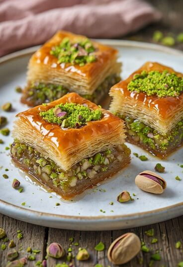

La baklava est un dessert traditionnel du restaurant Le Fiasco, préparé avec des feuilles de phyllo cuites et garnies de noix, d'amandes et de raisins secs. Elle est arrosée d'une sirop de miel et servie tiède, offrant une combinaison parfaite de textures et de saveurs sucrées.
Ingrédients : |
Plat |
|---|---|
|
 |